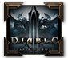
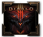

Архив
Сайта
По-долу ще намерите архив с подбрани функции в сайта, които вече не се използват поради една или друга причина.
Статии
По-долу ще намерите архив с подбрани функции в сайта, които вече не се използват поради една или друга причина.
- Архив анкети - Задаването на въпроси под формата на Анкети вече може да се прави в нашия Форум от всеки потребител (преди анкетите бяха публикувани в сайта от администраторите).
- Стриймове - Спряни поради слаб интерес
- Класации - Спряни поради постоянните промени по API-то от страна на Близард, подаване на невярна информация и други проблеми, които изискват постоянна работа.
- Търсене на партита - Спряни поради слаб интерес
- BlizzCon 2013 специализирана страница - тук публикувахме в реално време новините по време на BlizzCon 2013.
- Конкурсът Мистър D3BG - През 2014, след вкарването на Трансмогрификацията в Диабло 3, организирахме конкурс за най-красив герой в играта. Можете да разгледате специализирания ни сайт на посочения адрес, а повече за самия конкурс можете да прочетете на този адрес.
Статии
- Предварителното изтегляне на Diablo IV: Vessel of Hatred започна. Нов трейлър. Twitch drops и още
- Vessel of Hatred ще промени изцяло Diablo IV
- Сезон 5 започва на 6 август
- Представянето на новия клас - Spiritborn
- Diablo IV: Vessel of Hatred излиза на 8 октомври 2024
- Diablo 4 предстои да получи най-мащабния си пач
- Diablo IV Сезон 3: Season of The Construct започва днес в 20 часа
 2024
2024
октомври
септември
юли
юни
март
януари
- Какво предстои в Диабло 4 през следващите месеци
- Diablo IV: Vessel of Hatred - Първи Експанжън
- Diablo IV е безплатна за всички до 30 октомври
- Нови Twitch Drops за Сезон 2
- Диабло 4 Сезон 2 започва тази вечер
- Предстоящи промени в Diablo IV с пач 1.2.0 и Сезон 2
- Диабло 3 Сезон 29 започва на 16 септември
- Нов експанжън всяка година
- Diablo 4 пач 1.1.3 е вече активен
- Предстоящ стрийм на разработчиците за Сезон 2
- Сезон 2 Season of Blood започва на 17 октомври
- Diablo 3 пач 2.7.6 - нов Solo Self Found режим и Сезон 29
- Предстоят нови промени след лошия пач
- Новия пач е наличен за теглене и е голям 9 GB
- Нов Убер бос за сезон 1
- Diablo IV - Пач 1.0.4 (за всики платформи) е наличен
- Сезон 1 Season of the Malignant започва на 20 юли
- Сезон 1 на Diablo 4 ще бъде обявен на 6 юли. Нов клас в Diablo Immortal
- Диабло 4 Сезон 1 - Информация за предстоящият сезон!
- Diablo IV - Пач 1.0.3 (за всики платформи) е наличен
- Важно : Относно сезонните предмети, аспекти и история
- Diablo Patch 1.0.2 Hotfix 12 - Поправката касае следните класове : Друид и Магьосник
- Предстоящи подобрения по Diablo IV за Сезон 1 и 2
- Fun detected: Близард нърфват подземия един след друг
- Twitch Drops - наградите за втората седмица по случай пускането на Diablo IV
- Всички Helltide Mystery сандъци в Диабло 4
- Blizzard вече работят по два експанжъна на Diablo IV
- Ранния достъп до Diablo IV започна
- Състезание за Хардкор играчите
- Diablo 4 ще стартира с нов пач и баланс промени
- Twitch дропове и Primal Instinct Mount кампания от 6 юни
- Предварително изтегляне на Диабло 4 започва на 31 май
- Предстои нов клас в Diablo Immortal през юли
- BlizzCon се завръща на 3-4 ноември
- Пач 2.7 в Diablo II: Resurrected е вече наличен
- Трейлърите на всички класове
- Кампанията ще може да се пропуска след първо минаване
- Финални системни изисквания на Diablo IV
- Ladder Сезон 4 започва на 4 май
- Смъртта на хардкор ще бъде перманентна, дори на PvP
- Diablo 4 Server Slam тест между 12-14 май
- Близард пазят тайна за Диабло 4, която ще ни разкрият на 20 април
- Некроманта ще бъде нърфнат и още промени след обратната връзка от Бетата
- Battle Pass-ът ще струва €10 и ще отнема около 80 часа за завършване
- Сезоните на Diablo 3 ще започнат да се повтарят
- Стана ясно в колко часа отварят сървърите на Диабло 4
- Часовете на призоваване на световния бос Ashava в Бетата на Diablo IV
- Филмче за бетата на Диабло 4
- Детайли за бетата на Диабло 4 и наградите за участие
- Награда при достигане на левел 20 в бетата на Diablo IV
- Преглед на света на Diablo IV
- Датите за Бета тестовете на Diablo IV бяха разкрити
- На 18 февруари се очаква да бъде обявена бетата на Diablo IV въпреки слухове за отлагане на играта
- Сетовете и руните отпадат от Diablo 4
- Ladder Сезон 3 започва на 16 февруари
- Altar of Rites - нова механика в Диабло 3 за Сезон 28
- ПТР на Diablo 2 Resurrected следващата седмица
- D3BG.org навърши 11 години
2023
ноември
октомври
септември
август
юли
юни
май
април
март
февруари
януари
- Коледен евент в Диабло 3
- Изданието за колекционери на Диабло 4 вече е налично
- Обзор на интервюто с разработчиците от 15 декември
- Гледайте стрийм с разработчиците на Диабло 4 от 21 часа на 15 декември
- Коледен евент в Диабло 2 - 22 Nights of Terror
- Сезон 1 на Diablo IV няма да стартира с играта
- Близард очакват проблеми със сървърите при излизането на Диабло 4
- Diablo IV излиза на 06.06.2023
- Предстои голям анонс свързан с Диабло 4
- Слух: Диабло 4 може да излезне през април 2023г. с предварителни поръчки още през декември
- Сезон 27 започва на 26 август
- Сезон 26 приключва на 21 август
- Вижте геймплей на Diablo IV
- Поглед върху Некроманта на Diablo IV
- Некроманта е 5-тия клас в Диабло 4. Играта излиза 2023
- Регистрирането за Бета тест на Диабло 4 започна
- Diablo Immortal стартира в 20:00 часа на 2 юни
- Error 37 навърши 10 години
- Diablo Immortal излиза на 2 юни. Бета тест и за PC
- Пач 2.4 излезе. Първият Ладер започва на 28 април
- Сезон 26 започна
- Сезон 25 приключва на 10 април
- Пач 2.4 излиза на 14 април. Първият Ladder започва на 28 април
- Списък с промените на пач 2.4 беше публикуван. DClone евента става глобален
- Microsoft купува Activision Blizzard за близо $70 милиардa
2022
декември
ноември
август
юни
май
април
март
януари
- Анализ на Developer Update - декември, 2021
- Нови рунически думи и промени по уменията, наемниците и зоните в пач 2.4 на Diablo 2 Resurrected
- Очакват ни баланс промени и нови Ladder рунически думи в Diablo 2 Resurrected
- Сезон 25 започва на 10 декември
- Diablo IV е отложена за по-далечна дата
- Blizzard се отказват от BlizzCon събитията.. засега
- Близард отговориха за проблемите със сървърите на Resurrected
- Joe Shely е новият Гейм директор на Diablo IV
- Предварителните инсталации на Resurrected бяха пуснати
- Trapsin бъга ще бъде оправен с излизането на Resurrected
- Diablo II: Resurrected | Cinematic Trailer
- Diablo II: Resurrected стартира в 18 часа на 23 септември
- В Diablo 2 Resurrected ще можем да убиваме Cow King
- Ladder-only рунически думи ще има и на Non-Ladder Multiplayer и Single Player
- Гледайте стрийм на Бетата на Diablo 2 Resurrected, за да спечелите достъп
- Гейм директорът на Diablo 4 е отстранен
- Публикуваха Ремастерираните филмчета на Act I и Act II от Diablo II: Resurrected
- Ladder-only руническите думи ще бъдат налични на Single Player в Diablo II: Resurrected
- Датите за Бетата на Diablo II: Resurrected станаха ясни
- Бетата на Diablo 2 Resurrected може би ще започне на 17 август
- Diablo Immortal е отложена за първата половина на 2022г.
- Президентът на Близард, J. Allen Brack, напуска
- Подобрения по D2:Resurrected след обратната връзка
- Сезон 23 приключва на 18 юли
- Анализ на Developer Update - юни, 2021
- Бетата на Diablo 2 Resurrected ще бъде през август
- Diablo II: Resurrected излиза на 23 септември
- Ethereal предметите се завръщат в Diablo III със Сезон 24
- И тази година няма да има BlizzCon през ноември
- Започна втори Алфа тест на Diablo Immortal
- Кракнаха Алфата на Diablo II: Resurrected
- Алфа теста на Resurrected започва този четвъртък
- Алфа тест на Resurrected в Корея от 9 до 13 април
- Destruction Awaits
- Алфата на Diablo II: Resurrected може да започне скоро
- Сезон 23 започва на 2 април
- Сезон 22 приключва на 28 март
- Save файлове от Diablo II ще работят и в DII: Resurrected
- Diablo II: Resurrected страница в секция Играта
- Новия Пач 2.7.0 носи промени по Последователите
- Всичко за Diablo IV от BlizzConline 2021
- Всичко за Diablo II: Resurrected от BlizzConline 2021
- Diablo Resurrected беше официално представен
- Новият герой в Diablo IV е Rogue
- Не пропускайте BlizzConline 2021 този петък
- Diablo 4 няма да излезе през 2021
- Vicarious Visions официално работят за Blizzard
- Алфа теста на Diablo Immortal приключи
2021
декември
ноември
октомври
септември
август
юли
юни
май
април
март
февруари
януари
- The Darkening of Tristram се завръща на 4 януари
- Предметите в Diablo Immortal
- Преглед на геймплея на Diablo Immortal
- Герои и прогрес на уменията в Diablo Immortal
- Бизнес моделът и микротранзакциите в Diablo Immortal
- Алфа теста на Diablo Immortal започна
- Анализ на четвъртия Developer Update на Diablo IV
- Нов ъпдейт на Diablo Immortal показва дали телефонът Ви е съвместим
- Сезон 22 започва на 20 ноември
- Сезон 21 приключва на 8 ноември
- Анализ на третия Developer Update на Diablo IV
- BlizzConline ще се проведе на 19-20 февруари 2021
- Скоро започват вътрешните тестове на Diablo Immortal
- Нови Интрота и модели за класовете в Diablo Immortal
- Diablo II навърши 20 години
- Анализ на втория Developer Update на Diablo IV
- Сезон 21 започва на 3 юли
- Нова информация потвърждаваща Remaster на Diablo II
- Сезон 20 приключва на 21 юни
- BlizzCon 2020 се отлага
- Превю на новия Пач 2.6.9 и Сезон 21
- Увеличават дължината на паролите в Battle.net
- Анализ на първият Developer Update на Diablo IV
- Сезон 20 започва на 13 март
- Сезон 19 приключва на 1 март
- Превю на Пач 2.6.8
- Близард за баланса и сетовете в бъдещия пач 2.6.8
- D3BG.org навърши 8 години
- The Darkening of Tristram се завръща
2020
декември
ноември
октомври
септември
август
юли
юни
май
април
март
февруари
януари
- Весела Коледа!
- Всичко за Diablo Immortal от Близкон 2019
- Втора част – системния дизайнер на Диабло 4 за най-обсъжданите теми
- Пач 2.6.7a е вече наличен
- Главния системен дизайнер на Диабло 4 за най-обсъжданите теми
- Сезон 19 започва на 22 ноември
- Писмо от гейм директора на Diablo IV
- Пач 2.6.7 е вече наличен
- Сезон 18 приключи
- Светът и Историята в Диабло 4
- Диабло 4 интервю с разработчиците
- Diablo IV - обобщена информация
- Diablo 4 трейлър
- BlizzCon 2019 започва днес!
- Списък с промени в ПТР пач 2.6.7
- Диабло 3 е вече в категорията Класически игри на Близард. Последния пирон в ковчега на играта
- Сезон 18 започва на 23 август
- Сезон 17 приключва на 18 август
- Сезон 17 започва на 17 май
- BlizzCon 2019 ще бъде на 1 и 2 ноември
- PTR Пач 2.6.5 - Превю
- NetEase са почти готови с Diablo Immortal
- Сезон 16 започва на 18 януари
2019
декември
ноември
Обявяването на Diablo 4
октомври
септември
август
май
април
март
януари
- ПТР на пач 2.6.4 започва на 21 ноември
- Diablo Immortal - механики, умения и дизайн
- Близард обявиха Diablo мобилна игра: Diablo Immortal
- Мистериозни кутии в демо зоната на Diablo на BlizzCon
- BlizzCon 2018 започва този петък
- Изглежда Диабло 4 няма да се случи скоро
- Вероятно предстои анонс на Diablo 2: Remaster или Diablo 4 на BlizzCon
- Комиксите по Диабло се отлагат
- Mike Morhaime напуска поста си на Изпълнителен директор. Нови игри в разработка
- Програмата за BlizzCon 2018 излезе
- Потвърден е Diablo анимационен сериал
- Двойно повече Horadric Caches в Сезон 15
- Сезон 14 приключва на 16 септември. Сезон 15 започва на 21 септември
- Diablo III - Подкаст : епизод VI - Diablo 3 Eternal Collection за Switch - всичко за порта
- Трейлър на Diablo III за Nintendo Switch
- Diablo 3 за Nintendo Switch излиза тази година
- Близард работят по няколко Diablo проекта
- Diablo Bestiary: Book Of Adria излиза на 15 октомври
- Предстои серия от комикси по Diablo вселената
- Travis Day напуска Близард
- Сезон 14 започна
- Преглед на Сезон 14 - Първия Тематичен Сезон
- Blizzard потвърдиха, че разработват нова Diablo игра
- Сезон 13 приключи
- Пач 2.6.1а е наличен
- Сезон 13 приключва на 3 юни. Сезон 14 започва на 15
юни - Blizzard се завръщат на Gamescom 2018
- Diablo 3 стана на 6 години
- Вече може да зареждате Blizzard Баланса на приятел
- BlizzCon 2018 ще се проведе на на 2 и 3 ноември
- Спечелете Battlecruiser пет по повод 20 годишнината на StarCraft
- Blizzard тийзват Diablo 3 за Nintendo Switch
- Challenge Rift #36 - от 27 февруари до 6 март
- Сезон 13 започна
- Challenge Rift #35 - от 20 февруари до 27 февруари
- Сезон 12 приключи
- Бан вълна за играчи използвали експлойт с Некроманта
- Challenge Rift #34 - от 6 януари до 13 февруари
- Challenge Rift #33 - от 30 януари до 6 февруари
- Сезон 12 приключва на 11 февруари. Сезон 13 започва на 23 февруари
- Легендарната сила на Bone Ringer е активирана отново
- D3BG.org навърши 6 години
- Нови спекулации за предстоящ Druid герой
- Blizzard тестват тайни ъпдейти на PTR
- Challenge Rift #31 - от 16 януари до 23 януари
- Нов експлойт - Некромансър и Bone Ringer
- Overwatch League таба в лаунчерa предизвиква лаг
- Challenge Rift #30 - от 9 януари до 16 януари
- Challenge Rift #28 - от 2 януари до 9 януари
2018
ноември
Обявяването на Diablo Immortal
октомври
септември
август
юли
юни
май
април
март
февруари
януари
- The Darkening of Tristram започна
- Честита Нова 2018 Година
- Challenge Rift #27 - от 26 декември до 2 януари
- Весела коледа!
- The Darkening of Tristram се завръща скоро
- Намаление на всички Diablo 3 продукти
- Challenge Rift #26 - от 19 декември до 26 декември
- Challenge Rift #25 - от 12 декември до 19 декември
- Challenge Rift #24 - от 5 декември до 12 декември
- Challenge Rift #23 - от 28 ноември до 5 декември
- Challenge Rift #22 - от 21 ноември до 28 ноември
- Ефекта на Shield of Fury е временно спрян поради бъг
- Challenge Rift #21 - от 14 ноември до 21 ноември
- Сезон 12 започна
- Challenge Rift #20 - от 7 ноември до 14 ноември
- BlizzCon 2017 е днес
- Challenge Rift #19 - от 31 октомври до 7 ноември
- Двойно повече гоблини от 6 до 9 ноември
- Намаление на всички Diablo 3 игри
- Пач 2.6.1 излезе
- Challenge Rift #18 - от 24 октомври до 31 октомври
- Сезон 11 приключи
- Blizzard Battle Net чат канал на D3BG
- Challenge Rift #17 - от 17 октомври до 24 октомври
- Наградите от виртуалните билети на BlizzCon 2017
- Ера 8 и Ера 9 ще бъдат изравнени със Сезон 11 и 12
- Challenge Rift #16 - от 10 октомври до 17 октомври
- Сезон 11 приключва на 20 октомври. Сезон 12 започва на 9 ноември
- Нови Социални опции в Blizzard Battle.Net, Appear Offline
- Challenge Rift #15 - от 3 октомври до 10 октомври
- Blizzard прекратяват поддръжката на Windows XP и Vista с излизането на пач 2.6.1
- Без Diablo новини на BlizzCon 2017
- Ново мобилно приложение - Blizzard Battle.net
- Challenge Rift #14 - от 26 септември до 3 октомври
- Challenge Rift #13 - от 19 септември до 26 септември
- Виртуалните билети за BlizzCon 2017 са вече налични
- Challenge Rift #12 - от 12 септември до 19 септември
- Challenge Rift #11 - от 5 септември до 12 септември
- Какво да очаквате от Сезон 12
- Challenge Rift #10 - от 29 август 5 септември
- Blizzard търсят мнението на PTR играчите отностно метата от четирима играчи.
- Challenge Rift #9 - от 22 август до 29 август
- Победителите, които печелят Rise of the Necromancer
- Пач 2.6.1 е наличен на PTR
- Challenge Rift #8 - от 15 август до 22 август
- Окончателно: Blizzard няма да се откажат напълно от името Battle.Net
- Challenge Rift #7 - от 8 август до 15 август
- Спечели Rise of the Necromancer за PC/PS4
- Challenge Rift #6 - от 1 август до 8 август
- Challenge Rift #5 - от 25 юли до 1 август
- Сезон 11 започна
- Challenge Rift #4 - от 18 юли до 25 юли
- Двоен XP бонус този уикенд - 14-17 юли
- Challenge Rift #3 - от 11 юли до 18 юли
- Класацията на Ера 8 вече е занулена
- Класацията на Ера 8 ще бъде занулена
- Challenge Rift #2 - от 04 юли до 11 юли
- The Chosen - Комикс за Некромантите
- Challenge Rift #1 - от 27 юни до 04 юли
- Ера 7 приключва с излизането на Пач 2.6.0
- Смъртоносните корени: История на Некроманта
- Сезон 10 приключи
- Преглед на новите зони: The Shrouded Moors и отвъд
- Некроманта и Пач 2.6.0 са вече налични
- Бетата на Некроманта приключи
- Преглед на Challenge рифтовете
- Преглед на Некроманта - Легендарни и Сет предмети
- Сезон 10 приключва на 23 юни. Сезон 11 започва
на 20 юли - Blizzard на Gamescom 2017 от 22-26 август
- Спечелете Ghost Kerrigan Wings с Heroes of the Storm
- Козметични награди в новия Necromancer Pack
- Malthael влиза в света на Нексуса
- Cinematic на кампанията с Некроманта
- Diablo 3 навършва 5 години
- Втори Q&A за Некроманта на 4 май
- Какво да очаквате от Сезон 11
- Нови Сетове за Некромансъра
- Озвучението на Некромансъра
- Бетата за Некромансъра започна!
- Бетата за Некромансъра започва скоро
- Сезон 10 започна
- 3 години от излизането на Reaper of Souls
- Пач 2.5.0 е вече наличен
- Сезон 9 приключи
- Интервю с Deadset
- BlizzCon се завръща на 3 и 4 ноември
- Обновена: Нови скилове и женския вариант на новия герой - Некромансър
- Сезон 10 ще бъде първия Сезон за конзолите
- Сезон 9 свършва на 17 март. Сезон 10 започва на 31 март
- Udder Cowlamity евента е активен отново
- Blizzard прекратяват поддръжката на Windows XP и Vista
- Какво да очаквате от Сезон 10 и нов ПТР пач
- Новите Primal предмети са преработени
- Developer Chronicles - Rift Fishing
- Пач 2.5.0 е вече наличен на PTR
- Q&A за новия герой Necromancer: Отговорите
- Напомняне: The Darkening of Tristram приключва на 1 февруари
- Няма да има промени по Парагон системата и още
отговори на въпроси - Q&A за новия герой Necromancer на 27 януари
- D3BG.org навършва 5 години
- Експлойт с новия Red Soul Shard ще бъде фикснат скоро
- Хотфикс на 64 битовия клиент
- Сезон 9 започна
- Решение на ниския FPS на новия 64 битов клиент
- Намаление на играта по повод годишнината
- Интервю с разработчиците по случай 20 годишнината
- Пач 2.4.3 е вече наличен
- Ретроспекция на 20 годишнината
- Честита Нова 2017 Година
2017
декември
ноември
октомври
септември
август
юли
юни
Излизането на Некроманта
Излизането на Challenge рифтовете, The Shrouded Moors и Temple of the Firstborn зоните
май
април
Бетата за Некроманта започна
март
Въвеждането на Armory и Primal Ancient предметите
февруари
януари
- Сезон 8 приключи
- Know Your Lore: Отвореният край в Diablo 3 историята
- Lightning Talk - Създаването на дънджъна по случай 20 годишнината
- Честванията на 20 годишнината ще започнат скоро
- Lightning Talk - Целите на дизайнерите в Дънджъните
- Lightning Talk - Разликите между PC и конзолите
- Весела Коледа!
- Lightning Talk - Създаването на Сет дънджъните
- Lightning Talk - Анимации и движения
- Lightning Talk - Еволюция на Cursed евентите
- Победителите, които печелят Diablo 3: Battle Chest
- Нов ъпдейт на PTR Пач 2.4.3 - 17 декември
- Сезон 8 свършва на 30 дек. Сезон 9 започва на 6 януари
- Lightning Talk - Blizzard говорят за миграцията към нови пачове без профилактика
- Lightning Talk - Капани, кликащи се и чупещи обекти
- Q&A с разработчиците във Facebook
- PTR на 2.4.3.42336 - Списък с промени
- Спечели Diablo 3: Battle Chest
- Пач 2.4.3 - Списък с промени
- PTR на 2.4.3 е вече наличен
- Превю на Necromancer - да възстановим баланса
- Всичко за Diablo на BlizzCon 2016
- Developer Chronicles: Armor of Akkhan
- Изтече Artwork на Некромансър
- Developer Chronicles: Greater Rifts
- Blizzard относно Season Journey бъга
- Сезон 8 започна
- Сезон 7 приключи
- Diablo III на BlizzCon 2016
- Програмата за BlizzCon 2016 излезе
- Blizzard ще започнат да трият информация от отминали
Сезони - Превю на Сезон 8
- Сезон 7 приключва на 14 октомври. Сезон 8 започва на 21 октомври
- Ерите стават по 6-12 месеца дълги
- Вече е налична платена смяна на BattleTag®
- In-game наградите от виртуалните билети на BlizzCon
- Хрониките на Wyatt Cheng за Wrath of the Wastes
- Оправен е експлойта с Firebirds Finery
- Blizzard обявиха програмата си за Gamescom
- Сезон 7 започна
- Blizzard нърфнаха Ring of Emptiness
- Пач 2.4.2 и Сезон 7: Обобщение
- Пач 2.4.2: Пръв поглед
- Сезон 6 приключи
- Превю на Сезон 7
- PTR PATCH 2.4.2 - v2.4.2.38247 - нови промени
- Двойно повече Blood Shards този уикенд
- Сезон 6 свършва на 22 юли. Сезон 7 започва на 5 август
- Josh Mosqueira напусна Blizzard
- Нов PTR пач е - 2.4.2 Build 38044 - датамайнд
- Нов хотфикс на 2.4.2 ПТР
- Предстоят големи промени по отборната игра
- Един от главните сценаристи на D3:RoS напусна Blizzard
- Diablo PTR patch - June 20th: Build 37893
- Blizzard ни представят One-Button Authenticator
- Play Your Way се завръща под формата на статии
- Вход чрез Facebook и стрийминг в игрите на Blizzard
- Blizzard на Gamescom 2016
- Blizzard ще увеличат броя на възможните смени на BattleTag-овете
- Diablo 3 стана на 4 години
- Пач 2.4.1 получи хотфикс
- Сезон 6 започна
- Пач 2.4.1 е вече наличен!
- Превю на Сезон 6
- Сезон 5 приключи
- Пач 2.4.1: Козметични предмети
- BlizzCon се завръща на 4 и 5 ноември
- Нова бан вълна
- Сезон 5 свършва на 15 април. Сезон 6 започва на 29-и
- Бан вълна за играчи ползвали 3rd Party Software
- Reaper of Souls на две години
- [Само в PTR-а] Теста на Сезон 6 започна!
- Blizzard раздават награди по случай годишнината на
Reaper of Souls - Разбиранията на разработчиците : Идеята за легендарните джемове
- PTR пач 2.4.1 - v2.4.1.36239
- Пач 2.4.1 е вече наличен за тестване на PTR
- Изглежда Diablo 3 Vanilla ще стане безплатна
- Скоро ще има ПТР с пач 2.4.1
- Ново кравешко ниво в The Immortal Throne
- Възможна промяна по Stone Of Jordan
- Преработка на Taeguk и бан вълна в Китайския регион
- Нов мини хотфикс - 11 февруари
- Напомняне относно сезонното прераждане
- Проблеми с ISP & латентността в играта
- Crusader Holy-shotgun
- Няма да има Community Buffs за Сезон 5
- Създаването на демидж числата
- D3BG.org на четири години!
- Сезон 5 започна
- Пач 2.4.0 получи хотфикс
- Пач 2.4.0 е вече наличен
- Честита Нова 2016 Година
2016
декември
ноември
BlizzCon 2016 - обявяването на Некероманта и Challenge рифтове
октомври
септември
август
юли
юни
май
април
март
февруари
януари
- Сезон 4 приключи
- Wyatt Cheng обясни защо Season Rebirth има ограничения
- Весели празници!
- Превю на Сезон 5
- Финални стойности за Legacy of Nightmares
- Превю на новите предмети в пач 2.4.0
- Бъг с извлечените легендарни сили в Kanais Cube
- Сезон 4 свършва на 30 декември. Сезон 5 започва на
15 януари - Нов 2.4.0 PTR пач - 15 декември
- Победителите, които печелят календар за 2016 г. и още други награди
- Превю на Greyhollow Island
- Wyatt Cheng говори относно % бонуса за уменията
в пач 2.4.0 - В бъдещ ПТР пач ще имаме индикатор за Kanais Cube
- Пач 2.3.0b ще бъде пуснат на 9 декември!
- ПТР пач 2.4.0 с нов hotfix
- Спечели календар за 2016 г. и още други награди
- Нови афикси за HotA и Seismic Slam в бъдещ ПТР пач
- Подобрение по Wizards Shield пръстена и Zuni сета и нова визия на Bandit Shrine
- Нов PTR пач, PTR wipe, датамайн и какво е Snapshotting
- Обзор на последните Сини постове за пач 2.4.0
- Пач 2.4.0 е вече наличен на PTR
- Новата Kanai's Cube рецепта: Аугментиране на предмет
- Превю на пач 2.4.0
- Всичко за Diablo на BlizzCon 2015
- Хайп и тийзове дни преди BlizzCon
- BlizzCon 2015 започва днес
- Linkin Park ще свирят на финала на BlizzCon
- Възможно е да се добавят нови амулети
- Излезна програмата за BlizzCon 2015
- Blizzard в битка с лага. Тестват потенциални решения
- Някои Bounty-та са спрени
- Двойно повече торби от баунтита тази седмица
- Духовете ще бъдат преработени в бъдеще
- Пач 2.3.0а беше пуснат днес
- Голяма вълна от банове поради експлойтване
- Наградите от виртуалните билети на BlizzCon 2015
- Blizzard обявиха нова издателска линия на книги
- Мобилния Authenticator на Battle.net е ъпдейтнат
- Лаг проблемите с Helltooth Сета ще бъдат фикснати
- Reddit Q&A обобщение
- Сезон 4 започна
- Стрийм маратон: Сезон 4
- Спечелете мини компютърни тонколонки
- Сезон 3 приключи
- Интервю на ZiggyD с разработчиците
- Виртуалните билети за BlizzCon са вече налични
- Пач 2.3.0 е вече наличен
- Предстои ъпдейт на профилите в официалния сайт
- Разяснение за Hunter's Wrath
- Blizzard канят медии на BlizzCon
- Превю на новите предмети в пач 2.3.0
- Ера 3 ще свърши едновремено със Сезон 3
- Превю на Сезон 4
- Спечелете Pennant и портрет с Heroes of the Storm
- Сезон 3 приключва на 23 август. Сезон 4 започва на 28-и
- Diablo III с над 30 милиона продажби за целия период
- Последният Play Your Way стрийм ще се проведе на 7
август - Бонусът при 6-тата част на IK сета ще бъде сменен
- Diablo няма да присъства на gamescom
- Превю на Kanai's Cube
- Нов ъпдейт на пач 2.3.0 на PTR
- Историята на Ruins Of Secheron
- Abd al-Hazir се завръща в играта
- Diablo III с 50% намаление
- Изкованите оръжия да нямат Level Requirement е бъг
- Blizzard Gear представиха новата си колекция
- Промени по Conduit пилона в пач 2.3.0
- Новият Bandit Shrine
- Победителите, които печелят Diablo II + LoD
- Въпроси и отговори с Travis Day и Nevalistis в Reddit
- Още информация относно Пач 2.3.0
- Списък с промени от новия пач 2.3.0
- John Yang и Wyatt Cheng - въпроси и отговори в Twitter
- Кубът на Kanai ще помни уменията на счупените предмети
- С пач 2.3.0 Keywarden-ите ще пускат директно Infernal машина
- Детайли за новия куб на Kanai
- Превю на пач 2.3.0
- Спечели Diablo II + Lord of Destruction по случай 15 годишнината на играта
- Запис от осмия Play Your Way стрийм и няколко Q&A с Nevalistis
- Play Your Way стрийм на 19 юни
- Максималния брой приятели в Battle.net е увеличен
- Визитата на победителят от Fan Art състезанието в сградата на Blizzard
- Сезон 3 - очаквана продължителност
- Как се стига до 1 място на сезона?
- Diablo III излезе в Китай. Разликите спрямо останалите региони
- Tyvalir говори за соло vs парти игрите
- Промени по крафтинг материалите
- Трансмогрификациите са вече налични и за D3 Vanilla
- Хотфикса за Торнадотата и Фетишите е активен
- Diablo 3 стартира с 1 милион продажби в Китай
- 2.2.1 Хотфиксове, Carnevil бъг и Tornado бъг
- Пач 2.2.1 е вече активен
- Развенчаване на кравоспирацията
- Uber босовете ще бъдат преработени
- Промени по Crowd Control
- Хотфиксове от 4 май
- Patch 2.2.1 и Крафтинга
- Обзор на вчерашния Play Your Way стрийм
- Play Your Way стрийм на 1 май
- Легендарният афикс на Death's Bargain е временно спрян!
- Blizzard обявиха завръщането си на Gamescom 2015
- Хотфиксове Пач 2.2.0
- Сезон 3 започна!
- Сезон 3 ще продължи минимум 4 месеца
- Пач 2.2.0 е вече наличен
- Сезон 2 приключи
- Какво ще се случи с Area Damage
- Предстои краят на "Ера 2"
- Нови хотфиксове в PTR-а и частичен рестарт на класацията
- Превю на Сезон 3
- John Yang отговори на въпрос за legacy предметите
- Равносметка след рестартиране на класацията в ПТР-а
- Манипулацията на пилоните ще бъде фиксната в пач 2.2.0
- Нов пач и рестартиране на класацията на PTR
- Бонусът от 2 части при новата Natalya’s сет е бъгнат
- Победителите от раздаването по случай годишнината на Reaper of Souls
- Най-важното от Tavern Talk стрийма от 24-ти март
- +100% Бонус XP и Злато по случай годишнината на RoS
- Официални промени в четвъртият пач на PTR 2.2.0
- Сезон 2 свършва на 5 април!
- Пояснение относно темите в Tavern Talk и ще имаме ли подобрен Roland's сет
- Какво ще има в Tavern Talk на 23 март
- Разговор за Древните оръжия в Twitter
- Спечели Reaper of Souls по случай първата годишнина
- В бъдеще ще има нови сетове и за другите класове
- Моменталното затваряне на Рифтовете в PTR е бъг
- Ексклузивните предмети и наградите за участие в Сезон 3
- Хотфиксове на Live и PTR сървърите
- BlizzCon 2015 ще бъде на 6 и 7 ноември
- Сезон 2 свършва скоро
- По-висок таван на Blood Shard-овете и куп други промени в новия PTR пач
- Преработка на колбите за живот
- Резюме на петъчния Play Your Way стрийм
- Всички 4-частови Сетове ще получат нови части
- Сет предметите няма да изискват ново намиране за новите си бонуси
- 5 от старите Сетове ще получат нова 7-ма част
- Пускат Китайски сървър в тест от 24 март
- Cooldown-а на умения, които ни правят безсмъртни, ще бъде увеличен
- Възможни промени по Ring of Royal Grandeur
- Списък с промени на PTR пач 2.2.0
- PTR за пач 2.2.0 ще бъде наличен скоро
- Шести геймплей стрийм с разработчиците на 6 март
- Увеличаване на стаковете на материалите в пач 2.2.0
- Микротранзакции в Азиатския сървър
- Пръв поглед над предстоящия пач 2.2.0
- Вълна от масови банове
- Трансмогрификациите от изминалите сезони ще могат да се печелят отново
- Сезон 1 приключи!
- Спечели достъп до Бетата на Heroes of the Storm
- Промени по официалният форум на Blizzard
- Ъпдейт на Сетове в следващия голям пач
- Победителите от раздаването по случай 3 годишнината
на D3BG - Сезон 2 започва на 13 февруари
- Tavern Talk стрийм на 10 февруари
- Сезон 2 ще бъде по-кратък
- D3BG стана на 3!
- Що е то "Ера"
- Бонус двойно повече гоблини
- Пач 2.1.2 излезе!
- По-редките предмети ще станат по-лесни за намиране
- Пач 2.1.2 ще излезе 3 седмици преди края на Сезон 1
- Честита Нова 2015 година!
2015
декември
ноември
октомври
септември
август
юли
юни
Обявяването на Kanai's Cube, Season Journey и Ruins of Sescheron
май
април
март
февруари
януари
- Края на Сезон: Какво да очакваме
- 100% бонус XP по случай Коледа
- Весели празници!
- Пач 2.1.2 ще бъде пуснат след празниците
- Пети стрийм на екипа на Diablo III
- Legendary Workshop стрийм
- Промени по Пилоните
- Wizzard - Cold Rasha Build
- Нови промени по Reakor's и Sunwoko сетовете
- Намаления до 65% на игрите на Blizzard
- Пач 2.1.2 е вече наличен за тестване на PTR
- Промяна по клановете в 2.1.2
- Всичко за Diablo от ден втори на BlizzCon
- Всичко за Diablo от ден първи на BlizzCon
- Новата игра на Blizzard - Overwatch
- Няма да има големи новини за Diablo на BlizzCon
- BlizzCon 2014 е тази седмица
- Форумна среща
- +100% бонус на Gold Find и EXP по случай Halloween
- Monk Trial Solo 40 GR - by Palavnicite
- Diablo Gifting системата е спряна временно
- Metallica ще свирят на BlizzCon
- Четвърти стрийм на екипът на Diablo III с гост Deadmou5
- Програмата за BlizzCon 2014
- Пач 2.1.0 е вече наличен за PlayStation 4 и Xbox One
- 50% намаление на Diablo III и Reaper of Souls
- Нов пач 2.1.1
- BlizzCon 2014 In-Game награди
- Парагон калкулатор от D3BG
- Победителите, които печелят Diablo III за конзола, тениски и портфейл
- Предстоят промени по намирането и употребата на Gem-овете в бъдещ пач
- Спечели Diablo III за конзола и още други награди
- Виртуалните билети за BlizzCon 2014 са вече в продажба
- Таблото с класациите се появи и в официалния сайт на
играта - 100% Бонус на Gold Find и два пъти повече Гоблини
- Без последния бонус от Firebird Сета в първите дни на новия пач
- Пач 2.1.0 е вече наличен
- Възможно е Сезоните да не започнат заедно с пускането на новия пач
- Greater Rifts Превю
- 50% бонус Gold Find през уикенда
- Спечели Diablo III: Ultimate Evil Edition - Победителите
- Превю на Сезоните
- Представяме Ви - разговори в Таверната
- Трейлърът на новия експанжън на WoW - Warlords of Draenor
- Превю на Трезора
- Гледайте стрийм на Blizzard на живо от Gamescom
- Спечели Diablo III: Ultimate Evil Edition
- Спечели достъп до Алфата на Heroes of the Storm
- Сезоните са вече налични за тестване на PTR
- Вашият шанс да спечелите ексклузивен SDCC Loot!
- Споделен дроп при Uber босовете
- Blizzard обсъждат дали да има поддръжка за конзолната версия след излизането ѝ
- San Diego Comic-Con Продукти
- Царството на съкровищата - Пач 2.1
- 2.1.0 PTR е активен!
- Превю на ПТР Пач 2.1.0
- Ексклузивно съдържание за ПС3/ПС4
- Промени в новия пач 2.0.6
- PS4 Ultimate Evil Edition ексклузивно съдържание!
- Близард се завръща на Comic Con
- Победителите, спечелили Reaper of Souls #2
- Победителите в конкурсът Мистър D3BG
- Мистериозен легендарен предмет с червен лъч
- Годишният бонус на легендарните ще бъде запазен
- Мистър D3BG - Гласуването започна!
- Отваряне на 170 Horadric Cache-та
- Спечели Diablo III: Reaper of Souls с D3BG.org #2
- Историята на Diablo
- И след това го удвоихме - Честит рожден ден, Диабло 3!
- Patch 2.0.5 вече е наличен в Америка
- Reaper of Souls пристига за конзоли на 19 август!
- Епичен Diablo III Giveaway по случай втория си рожден ден!
- The Lost Vikings и Rock ‘n Roll Racing са вече безплатни
- Стани Мистър D3BG и спечели Diablo III за конзола
- BlizzCon 2014: Конкурси
- Официално: +% Damage бъга ще бъде оправен с пач
- Саундтракът на Reaper of Souls е вече в продажба
- Iron Skin и Laws of Justice може да убият вашия хардкор Crusader
- BlizzCon се завръща на 7 и 8 ноември
- Morbed - новият Diablo III роман
- +% Елементал Щети и как работят те
- Heartbleed обявление за сигурност
- Две години по-късно, Reaper of Souls е Diablo III, което всички чакахме
- Заслужава ли си да се правят Рифтове?
- Допълнителна информация за пач 2.0.4
- Golden Resplendent Chest - дропът е бъгнат, очаквайте бъф
- Reaper of Souls - историята за Malthael
- Diablo III: Предистория
- Какво е Worldstone
- Таблица на трудностите!
- 50% повече експириънс през идните почивни дни!
- Победителите от Фен Арт състезанието на Blizzard и DeviantART
- Дропът на легендарни е увеличен отново
- Дневниците на Лилит
- Battle.Net приложенето вече поддържа чат
- Легендарните материали и техния дроп шанс
- Reaper of Souls с 2.7 милиона продажби през първата
седмица - Възможни легендарни предмети от Horadric Caches
- Пач 2.0.3. Хотфиксове - ъпдейт 01.04.2014
- Happy Reaper - игра по случай първи април
- Проблеми по които Близард работят в момента
- Технически проблеми
- Дневникът на Инариус
- Дневникът на Aдриа
- Бонус щети към различните магии (за всички класове)
- Дропът на легендарни е увеличен
- Blizzard AR Viewer - що е то?
- Ще има нови Парагон портрети скоро
- Победителите, спечелили Reaper of Souls
- Ънбоксинг на колекционерското издание на RoS
- Що е то пилон - нов бонус в Diablo 3: ROS
- Потвърдено: Season и Ladder-подобна система до няколко месеца
- Diablo III: Reaper of Souls излезе официално и в Европа
- Mystic-а вече в Game Guide-а на официалния сайт
- Спечели Diablo III: Reaper of Souls с D3BG.org
- Сет предметите ще падат само на Тормент
- Играйте с 100% бонус XP този уикенд!
- Reaper of Souls с D3BG част 3: мнението на olfilthy
- Първи поглед: Пандемониъм
- Отключете Expert карти в Hearthstone с Reaper of Souls
- Видеа към новите умения на героите
- Reaper of Souls Launch Party
- Diablo III: Reaper of Souls™ Геймплей трейлър
- Победителите, спечелили безплатно копие на
Reaper of Souls - Аукционът спира днес
- Тегленето на победителите от томболата ще се проведе
утре! - Превю на The Order и Storm of Light
- LIVE Q&A със Josh Mosqueira на 25 март
- Reaper of Souls с D3BG част 2: мнението на forge
- Купи Diablo III с 50% намаление
- Историята зад Кръстоносния поход
- Първи поглед: Изследване на Blood Marsh
- Reaper of Souls с D3BG част 1
- +50% Повече опит за да отпразнувате предстоящото излизане на RoS!
- Телевизионната реклама на Reaper of Souls
- Българското участие във Fan Art състезанието
- Кои са кръстоносците и от къде идват
- Що е то - Pools of Reflection
- Patch 2.0.1 Hotfixes и разяснение на Nephalem Glory системата
- 2.0.1 Легендарните ще са достъпни за Трансмог в РоС
- PATCH 2.0.1 е достъпен за сваляне!
- Пач 2.0.1 излиза утре!
- Reaper of Souls ™ - Бонуси за предварителните поръчки
- Reaper of Souls ™ Closed Beta и Patch 2.0.1 PTR сървърите ще бъдат спрени
- Reaper of Souls™ Пръв поглед: Paragon 2.0
- Reaper of Souls™ Пръв поглед: Clans и Communities
- Blizzard ни напомнят: Аукциона ще бъде спрян скоро
- Diablo стартера преминава към десктоп приложението на Battle.net
- Blizzard и deviantART организират Fan Art състезание
- Артове по случай Свети Валентин
- Спешен малък пач за PTR и бетата. Нова вълна от покани за затворената бета
- Промени по съхранението на крафтинг материалите, след излизането на Reaper of Souls
- Ревю на Book of Tyrael
- Dane Bright - Новият търговец в играта
- 23 години от създаването на Blizzard Entertainment
- Diablo III с 15 милиона продажби за изминалата година
- Нови промени за пач 2.0.1 и затворената бета
- Blizzard Store промени името си на Blizzard Gear
- Пълен списък на легендарните от Torment трудноста
- Изданието за колекционери на Reaper of Souls беше официално разкрито
- Спечели Diablo III: Reaper of Souls с D3BG.org и Ozone.bg
- Опцията "Lower Difficulty" ще бъде премахната от Хардкор.
- Bounty Rewards Hotfix в затворената бета на RoS
- Бетата на Reaper of Souls достигна 20 хиляди играча
- Diablo III се мести в новият Battle.net клиент
- Devil's Hand е възможно да бъде разкрит много скоро
- Победители от "Спечели Diablo III" раздаването
- D3BG.org на две години!
- Нови бонуси при Сет итемите
- Ново в сайта: Добавяне на статии
- Спечели Diablo III
- Blizzard безсилни срещу спама в играта
- Нова support система - Callback
- DIABLO III: STORM OF LIGHT EXCERPT
- Честита Нова 2014-а година!
2014
декември
ноември
Обявяването на Ancient легендарните предмети
октомври
септември
август
Начало на Сезон 1
Пускането на Greater рифтовете, Трезора, Легендарните камъни и Класациите
Излизането на Diablo III: Ultimate Evil Edition изданието за PS4/XBOX ONE
юли
юни
май
април
март
 Официалното излизане на Reaper of Souls
Спирането на RMAH
февруари
Представяне на Paragon 2.0, Клановете и комюнитата
януари
- Весели празници!
- Diablo® III: Reaper of Souls™ с Pre-Order и Release Date
- Diablo III: Reaper of Souls Бета - Live Stream
- Reaper of Souls Closed Beta Започна
- Patch 2.0.1 PTR Now Available
- Blood Shards - Нова валута в Reaper of Souls
- Friends and Family Бета теста започва
- Nephalem Trials съществуват "под някаква форма"
- HearthStone Beta ключ за всички тествали Battle.Net Desktop клиента
- Колекционерското издание на Reaper of Souls ще предлага WoW Pet - Treasure Goblin
- Diablo III за PS4 с дистанционно управление чрез PS Vita
- Diablo III: Reaper of Souls - Adventure Mode First Look
- Diablo III ROS Feature Trailer
- Новият експанжън на WoW: Warlords of Draenor
- Heroes of the Storm Cinematic Trailer
- BlizzCon 2013
- Reaper of Souls™ First Look: Westmarch Soundtrack
- Демоничните създания на Westmarch
- Battle.Net Store отвори (дигитални) врати
- Появи се иконата на RoS в Beta Profile Settings в Battle.net
- Победителите от тазгодишното Тиквено състезание
- Blink-182 на BlizzCon 2013
- Stay Awhile and Listen vol.1 вече налична
- Reaper of Souls First Look: Westmarch Level Design
- Историята на Westmarch
- PC Gamer hands-on: В битка с ангела на смъртта
- The Mystic - Пръв поглед върху Enchanting-а и Transmogrification-а
- Победителите от второто раздаване на HearthStone™ Beta ключове
- Heroes of the Storm - новата игра на Blizzard
- Излезе програмата на BlizzCon 2013
- Спечели HearthStone Beta с D3BG.org #2
- Анкетиране на Diablo играчите, цената на Reaper of Souls, изтичане на нова информация
- BlizzCon® стоките в продажба от утре
- Blizzard обявиха бонусите за Blizzcon Virtual Ticket
- Paragon 2.0 Recap
- Paragon 100 за 34 часа
- Победителите от HearthStone™ Beta раздаването
- Спечели HearthStone Beta с D3BG.org
- Diablo 3 ще изисква връзка с интернет и след спирането на AH/RMAH
- AH и RMAH ще бъдат премахнати от играта
- Travis Day с подробности за Paragon 2.0
- Stay Awhile and Listen Book 1
- Diablo III Console комикс от Кейти Райс
- Виртуалните билети за BlizzCon са вече в продажба на цена от $39.99
- Conan O’Brien за озвучаването в конзолата версия на Diablo III
- Diablo III: Storm of Light идва през 2014
- Blizzard с нови детайли за Mystica
- Starter Edition и за конзолната версия
- Трудността в конзолната версия, Transmogrification, Нов тапет и още
- Уайът Ченг за още подробности относно Mystic-а
- Кои системи ще бъдат безплатни и кои ексклузивни за Reaper of Souls?
- Различията между loot 2.0 и loot-а в конзолата
- Повече детайли относно Mystic-а в Reaper of Souls
- Портите на ада се отвориха и за конзолите
- Reaper of Souls: Всичко което знаем до момента
- Възможно е да има RoS beta до края на 2013.
- Diablo III: Reaper of Souls - Crusader Class Gameplay Demo
- Diablo III Reaper of Souls Loot 2.0 / Paragon 2.0
- D3's Expansion 'Reaper of Souls' - ПОТВЪРДЕН
- Очаква ни трейлър на Diablo 3: Reaper Of Souls
- Gold-a в Diablo 3 поевтинява драстично !
- Епичен Blizzard ФенАрт - Димитри Прозаров
- Blizzard Working Hard on 'Loot 2.0'
- Diablo III - New E3 Console Video
- Diablo III E3 Multiplayer Trailer | E3 2013
- Blizzard отива на San Diego Comic-Con 2013
- Still No ETA for "Ask the Devs" Round 3
- Възможен Buff за Paragon Level 100
- Честит Рожден Ден на Diablo III
- Shrines ще се "мултиплицират"
- Nekarat the Keywarden ще има шанс за дроп и на други keys..
- 1.0.8 PTR Patch Notes - БГ Превод
- PTR 1.0.8 Първи впечатления
- BlizzCon 2013 билети в продажба от 24 и 27 април
- Възможен 1.0.8 PTR в следващите 24 часа...
- Developer Journal: Multiplayer Improvements
- Повече информация за 1.0.8 СКОРО
- Без Dyes за Легендарните в 1.0.8
- Възможен 1.0.8 PTR тази седмица..
- Blizzard започват бета тест на Expansion-a скоро..
- Идентифициране на всички предмети в 1.0.8
- Най-новото от света на Diablo...
- Интервю с Matthew Berger на PAX East
- Patch 1.0.8 ще мине през PTR
- Itemization-а води до промени в Monster Power-a
- Witch Doctor Farm Build - Low Budget
- Blizzard ще правят Легендарните "вълнуващи"
- Присъединете се към Ladder-a
- Какво ни очаква в конзолната версия
- Припомнете си историята на Diablo
- За кой персонаж от играта, бихте искали да научите повече
- Фен творения на седмицата - Silk Art
- Travis Day за Спасението на Diablo 3
- Diablo III за PS3/4 няма да бъде свързан с Battle.net
- Победител в PvP Турнирът "The Legend" е Ivu
- PvP Турнирът "The Legend" e днес!
- Diablo III пристига за PlayStation®3 and PlayStation®4
- Датите за Blizzcon 2013 са вече ясни
- PvP Турнир: "The Legend"
- Пач 1.0.7 е вече достъпен в официалните сървъри
- Пач 1.0.7 излиза утре
- Дуелите ще бъдат преименувани на Brawling
- Diablo III с над 12 милиона играчи
- Най-бързият начин да се сдобием с Demonic Essence
- Нов ъпдейт на PTR Patch 1.0.7
- Ask the Devs инициативата стартира скоро
- Ъпдейт на PTR Patch 1.0.7
- Jay Wilson e Гейм директор на все още неанонсирана игра на Blizzard
- StarCraft II: Heart of the Swarm Opening Cinematic
- D3BG.org на една година!
- Jay Wilson напуска Diablo III проекта
- Patch 1.0.7 е вече достъпен в PTR
- Съдържанието на 1.0.7 PTR
- Система за добавяне на приятели
- Patch 1.0.7 превю
- Пач 1.0.7 ще бъде "голям" - отива на PTR преди официалното му излизане
- Информация за 1.0.7
- Победители в Mighty Blow предизвикателството са..
- Ново в сайта: Анкети
- Mighty Blow Challenge
- Честита Нова 2013-а година!
2013
декември
Започва бетата за Reaper of Souls
ноември
октомври
септември
август
Обявяването на Reaper of Souls
юли
юни
май
април
март
Diablo III пристига за PS3/XBOX 360
февруари
Излизането на дуелите (Brawling)
януари
- Информацията за PvP-то е вече налична!
- Новата Стрийм система е вече налична
- Весели празници!
- Край на "Дупенето" на предмети. Засега обаче - само за Азия
- Aнкета: Кой помощник ползвате най-често?
- Бюджетен Archon гайд ( как да фармим MP1 за 1 милион злато )
- Хиляди акаунта баннати за Ботинг
- Azmodan MP10 - HoTa Smash Build
- Анкета: Играете ли в публични игри?
- Инфо за първия Експанжън следващата година и вероятно версия за конзоли
- Коя околна среда от Act II ви е любима?
- Анкета: С какъв Class играете?
- Blizzard пита: Коя околна среда от Act I Ви е любима?
- Електронната книга “Heroes Rise, Darkness Falls” вече е достъпна
- Patch 1.0.6 вече е достъпен
- Тестове на нова Battle.net функционалност скоро
- Diablo III Hotfixes -- Ноември (Обновено 11/26)
- Diablo III не цели да бъде E-Sport
- Спестете 20 евро при покупка на Diablo III и Star Craft II
- Ударете едно рамо !
- Diablo III ще има продължение
- Blizzard пита: Кой Monster Power Level предпочитате?
- Лични съобщения
- Patch 1.0.5 вече е достъпен!
- Ново събитие: Infernal Machine
- Monster Power: More Guts, More Glory
- Public Test Realm Patch 1.0.5 Notes
- Patch 1.0.5 Now Available on PTR
- Скоро: "Appear Offline" опция в Battle.net
- Developer Journal: Crowd Control Changes
- Patch 1.0.5 Sneak Peek
- Аватари по ваш избор!
- Как Европа посрещна премиерата на Diablo III
- Diablo III Въпроси и отговори от разработчиците
- Пач 1.0.4 излиза утре!
- Нова Paragon система и промени по аукциона в 1.0.4
- Пач 1.0.4 Превю: Wizard
- Пач 1.0.4 Превю: Barbarian
- Starter Edition-a безплатен за всички
- Кратко инфо за идващия пач 1.0.4.
- BattleNet хакнат. Blizzard: Сменете си паролата!
- Среща на кръгла маса с феновете - Gamescom 2012
- Профилните страници са вече факт!
- Скоро на Diablo3.com
- D3BG.ORG вече е официален фен сайт на Diablo3 за България!
- Съобщение от Майк Морхайм до играчите
- Hotfix 29.06.12
- Patch 1.0.3a
- Patch 1.0.3 - утре
- Real-Money Auction House е LIVE в САЩ
- Новата кръпка за Diablo 3 намалява сървърното натоварване при вход в Battle.net
- Bashiok - компилация от отговори на въпроси
- Диабло 3 дизайн – ъпдейт
- RMAH - за неопределен период
- RMAH се отлага за 30 май
- Diablo III Secret level-a е разкрит!
- Започна се!
- Вече може да инсталирате играта!
- ЕДДДННООООООО!!!!!!!!!!
- ДДДВВЕЕЕЕ!!!!!!
- ТРИИИИИ!!!!!
- Остават четири дни до началото!
- Финалното броене започна!
- Последен шанс да спечелите по един от 5-те Sigil-а
- Diablo III: Wrath
- Предварителна подготовка за Diablo III
- Отключени са вече 90% от Reveal сайта
- Diablo в 5 минути
- Diablo 3 - Ръководство
- Край на промоцията от Пулсар
- Нови две телевизионни реклами на Diablo III
- Diablo III: Wizard Spotlight Video
- Телевизионната реклама на Diablo III
- Кратко интервю с Jay Wilson от Корея
- Лабиринт: Да избягаш от Ада
- Diablo III: Witch Doctor Spotlight Video
- Бетата на Diablo III е вече отворена
- Diablo III: Beta Patch 17
- Бетата на Diablo III е към своя край
- Diablo III: Monk Spotlight Video
- Вече може да си промените BattleTag-a
- Седмицата на Barbarian-a започна
- Diablo 3 - Beta Patch 16 (преведен)
- Специална оферта за потребителите на d3bg.org
- Diablo III: Barbarian Spotlight Video
- Darkness Falls. Heroes Rise.
- Diablo III: Demon Hunter Spotlight Video
- API за Diablo III по-късно тази година
- Нови 10 видеа на уменията
- Новата Nephalem Valor система
- Бетата продължава да не работи
- Новият Beta Patch 15
- Authenticator-ът е вече активен в новия Patch 15
- Diablo III излиза на 15 май!
- Нови видеа към уменията
- Нови 3 зони в бетата
- Няма да има PvP в момента на излизането
- Beta patch 14 - какво ново?
- Hardcore мода се отключва на 10-то ниво
- Няма да има Европейска бета
- Beta patch 14 идва!
- Босовете срещу елитните чудовища
- Diablo III излиза на 17 април?
- Bashiok на път, а Jay говори за датата на излизане
- Видео към всяко умение и ъпдейт на Skill калкулатора
- Diablo 3 - Beta patch 13 (преведен)
- Руни и магии в Диабло 3 - Съществени промени
- Вече си имаме Аватари
- Blizzard: Ще умрете. Обещаваме.
- Diablo III е отложена за Q2 2012
- 100 000 Diablo III Beta покани
- Без брутални анимации при умиране в Diablo 3
- Diablo III - най-очакваната игра за 2012
- Без BlizzCon тази година
- Реклами в следващото ММО на Blizzard
- Diablo 3 - Бета пач 10 (преведен)
- Diablo III - Системни промени
- Разработка на d3bg.org
- Интро - Видео - Диабло 3 *SPOILER*
- Диабло стана на 15 години!
2012
декември
Последният пирон в ковчега на PvP Team Deathmatch е забит - Blizzard обявяват нова Brawling система
ноември
октомври
Пускането на Uber босовете
септември
август
Въвеждането на Paragon 1.0 системата
юли
D3BG е вече официален фен сайт
юни
май
 Официалното излизане на Diablo III
април
март
Обратното броене започва - Diablo III излиза на 15 май